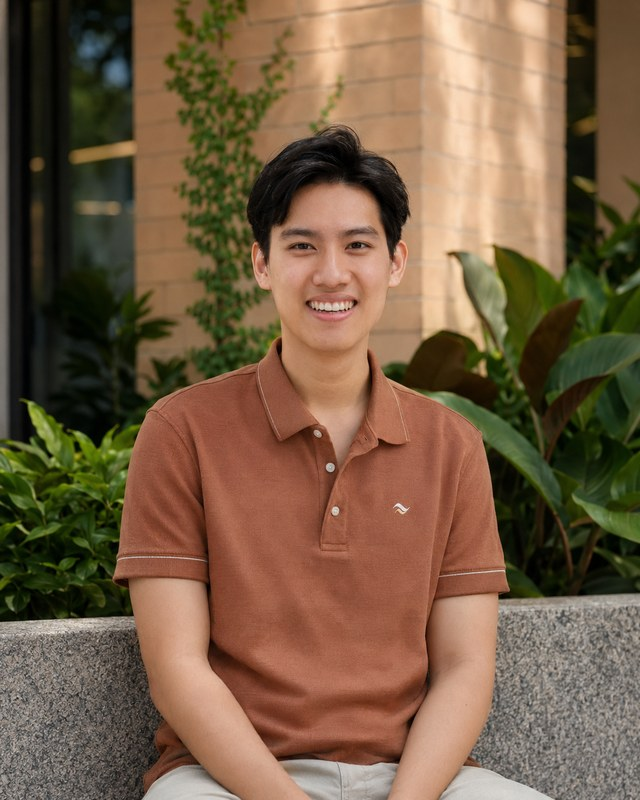
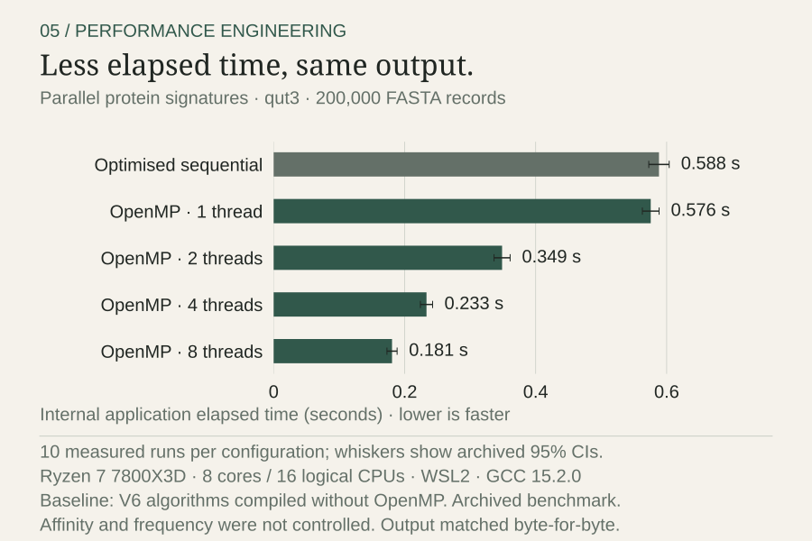

Automated test results

01 Cloud systems / Applied AI
Strobe AI
A multimodal assistant with ACP streaming, read-only MCP tools, user-scoped retrieval and queued AWS media processing.
Node.js · AWS · Bedrock · ACP / MCP
Read case studySoftware & data engineering
Brisbane, Australia
I’m Vigo, a QUT data science student in Brisbane. I build Python/SQL applications, AWS workflows and retrieval-based AI.
Software engineering · Machine learning · TensorFlow/Keras deep learning

Vigo Dang
Brisbane, Australia
01 / Selected work
Cloud applications, applied AI and performance engineering. Open a project for the decisions and evidence.
All work01 Cloud systems / Applied AI
A multimodal assistant with ACP streaming, read-only MCP tools, user-scoped retrieval and queued AWS media processing.
Node.js · AWS · Bedrock · ACP / MCP
Read case study
02 Cloud / Data quality
Authenticated CSV quality analysis with direct S3 uploads, queued Fargate workers and an interactive report. Recorded scaling evidence accompanies the working interface.
React · Node.js · AWS S3 / SQS / Fargate
Read case study
05 Performance engineering / C++
A supplied C++ program reworked for deterministic parallel execution. Retained measurements show a 3.25× gain at eight threads over the optimised sequential baseline.
C++17 · OpenMP · SIMD-friendly data layout
Read case studyRetrieval / Research systems
Scientific Research SynthesisData / Desktop application
Predictive Credit Scoring System02 / Behind the work
A model needs a usable interface. A queue needs a failure path. An answer needs a source. I’m interested in making those connections clear to the next person.
How I approach the work